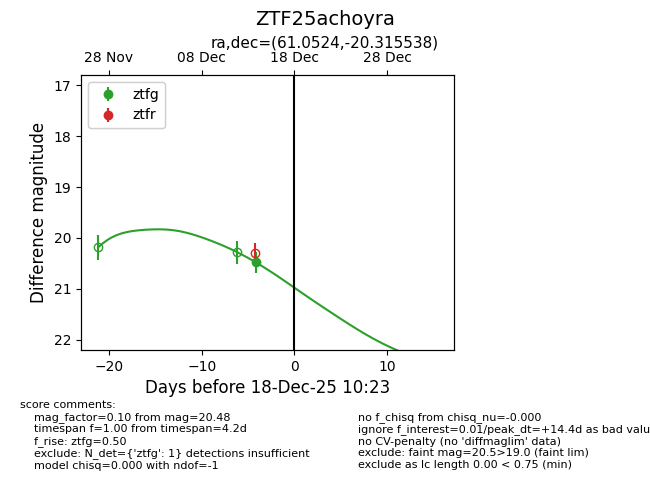
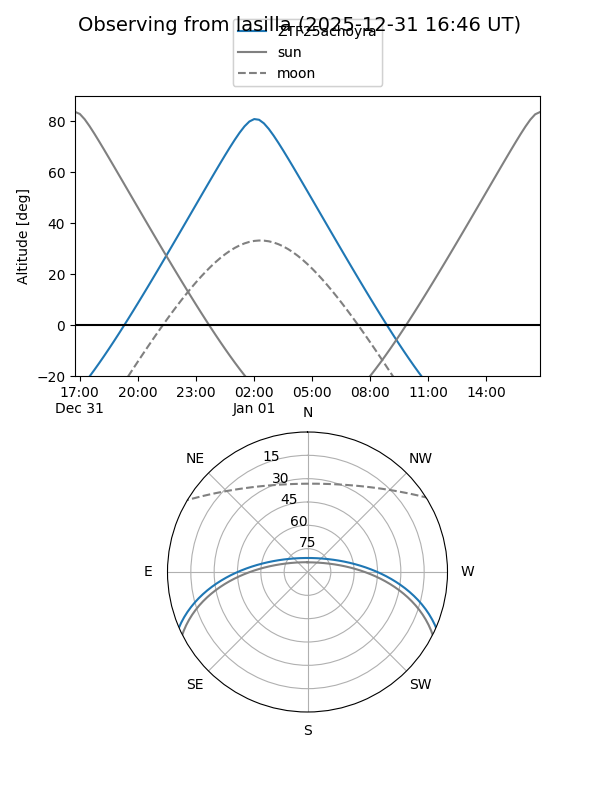
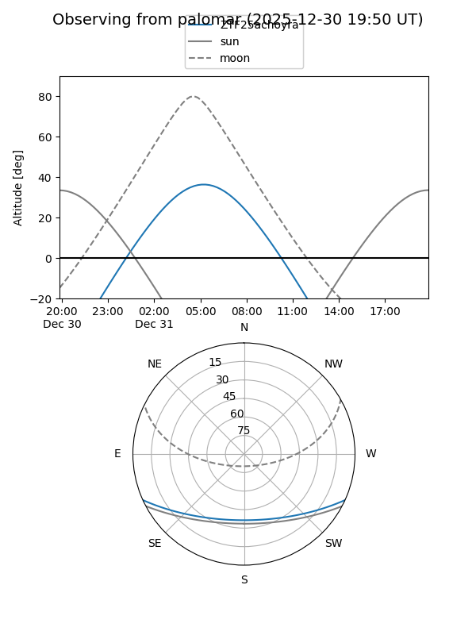

ZTF25achoyra
Target ZTF25achoyra at 2025-12-18 11:18
Aliases and brokers:
FINK: fink-portal.org/ZTF25achoyra
Lasair: lasair-ztf.lsst.ac.uk/objects/ZTF25achoyra
ALeRCE: alerce.online/object/ZTF25achoyra
alt names
ZTF25achoyra (ztf,fink_ztf)
Coordinates:
equatorial (ra, dec) = 61.0524,-20.31554
equatorial (HMS+DMS) = 04:04:12.56,-20:18:55.94
galactic (l, b) = (214.8928,-45.61828)
Photometry
last ztfg=20.48
1 ztfg detections
Lightcurve

Visibility


Additional plots